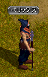
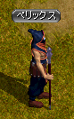

| 支部長バズケイル |
|
|
冒険家協会ビガプール支部／黄金色の小麦畑亭
（16，17） |
支部長バズケイルは
ビガプール町中の左上、冒険家協会に入って一番奥にいる。
ここを記憶１推奨。
|
| ジンジャー |
|
失われた記憶を取り戻すため、救出を手伝ってくれた冒険家ジンジャーを訪れる |
ネイダック平原／ラカリフサ北部地域
（180，24） |
協会内の移動ポータルから冒険家協会バーに行き、
すぐに移動ポータルでで戻ると古都の冒険家協会本部へ行ける。
ミラーテレポータ（古都冒険家協会・ロビーにいる）
１１１３７
で、該当マップへ。
ジンジャーはマップの右上方面（180，24）にいる。
ジンジャーとは仲が良いようで、
会話の途中で笑いながら冗談で一撃をくらわすシーンが登場する。 |
| マリナ |
|
自分の事を知っているらしい女の子に会いに行く |
農村ラカリフサ
（102，84） |
マリナはラカリフサの中央右方面（102，84）にいる。
この子の姉（レネ）と仲がよかったらしいが、
姉は自分が原因で失踪中と言い、恨まれている。
実はレネはゾロス（獣人のマスタークエに出てくる）によって既に殺されている。 |
| 支部長バズケイル |
|
|
冒険家協会ビガプール支部／黄金色の小麦畑亭
（16，17） |
記憶１を使って。 |
| 催眠術師ディノ |
|
失われた記憶を取り戻すため、催眠術を試す |
新興王国ビガプール
（126，136） |
ディノはビガプール町中の右下方面（126，136）にいる。
記憶１を上書き。
|
| |
|
デビルスカラーの懐中時計を手に入れる |
北フォーリンロード／ビガプール南部地域 |
ファストポータル
北フォーリンロード／ネイダック平原地帯
より、飛んだ先の移動ポータルに入って戻ると早い。
対象MOBはデビルスカラー。
マップの一番右下方面に２匹、一番左下方面に２匹の計４匹いる。
２０秒沸き。
ワームに注意。
ドロップは悪い。 |
| 催眠術師ディノ |
|
|
新興王国ビガプール
（126，136） |
記憶１を使って。
ここでイベントが発生し、「一部の記憶を取り戻した」と自分が発言する。
ただし、内容については何も説明されない。
話し終えると称号を取得し、終了。 |
 
